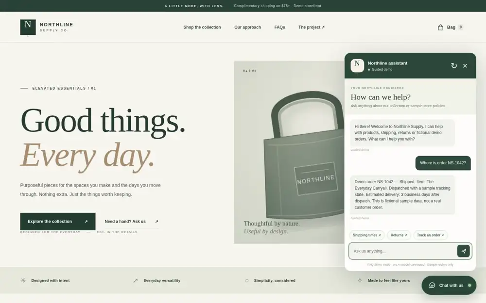
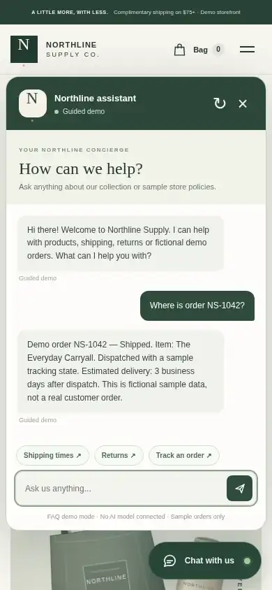
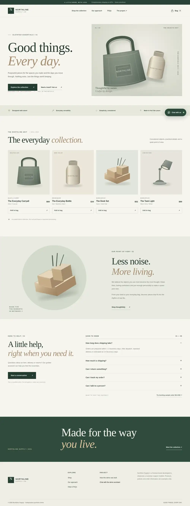

PORTFOLIO CASE STUDY / 003
Customer support,
without the friction.
A responsive retail demonstration with a genuinely functional FAQ assistant, simulated order lookup and an optional secure AI integration.
Explore the working demoEVERY DAY.
Customer experience, thoughtfully considered.
CAPTURED FROM THE APPLICATION / 04
The experience, in action.
Actual screenshots captured from the working application in isolated Chromium interface tests. Try the published demo using the links on this page.



01 / THE CHALLENGE
Good support should be easy to find.
Small online stores often need quick answers for product questions, delivery estimates, returns and order updates. This concept demonstrates a fast, approachable interface for those common requests, without pretending to be connected to a real business.
02 / THE SOLUTION
Useful answers. Clear boundaries.
A responsive ecommerce landing page integrates a floating support widget with suggested questions, validation, typing feedback, session conversation context and order lookups against explicitly fictional records. Unknown requests receive an honest human-support fallback. An optional Cloudflare Worker can power real AI responses using a server-held Gemini key.
03 / THE IMPLEMENTATION
Built to be updated.
The storefront uses semantic HTML, responsive CSS and modular JavaScript. Products, policies, FAQs and sample orders live in an editable knowledge module. Chat messages are rendered as text, not unsafe HTML. An optional rate-limited server integration keeps credentials out of public code.
Purposeful layout for desktop, tablet and mobile.
Conversation flow, quick questions, reset, feedback and fallback states.
Product and order information is clearly marked as fictional.
Optional backend for model responses; no client-side API secrets.
PROJECT TRANSPARENCY
An independent
concept project.
This project was developed independently as a demonstration, not commissioned by a client. Northline Supply is fictional. The guided demo is a deterministic FAQ system, not a language model. AI mode requires a separately deployed, configured backend. No real payments, orders, support tickets or agent connections are available.